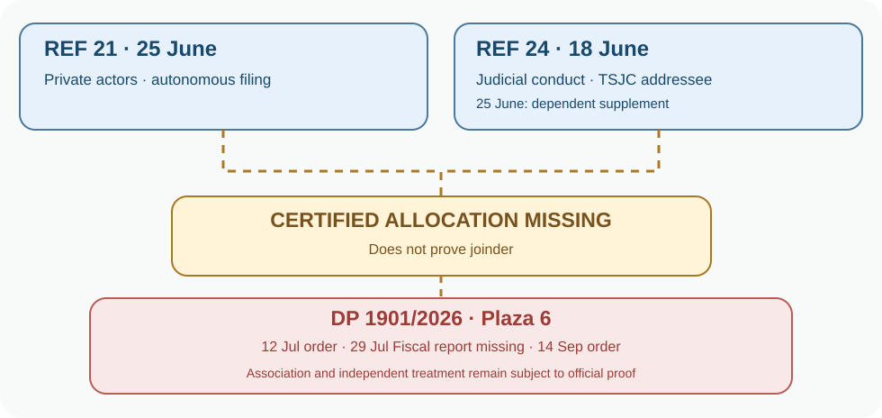

Agreement 102 approves a consolidated allocation framework adapted to LO 1/2025.
TSJC GOVERNING CHAMBER · 23 NOVEMBER 2026 · LIMITED CORRESPONDENCE
A11: allocation rules and two distinct complaints
Agreement 381/2026 took note of governmental application A11 and directed delivery of the certificate of Agreement 102/2026 and the approved allocation rules. The three PDFs received on 23 November contain the certificate, but not the full operative rules. The individual history of REF 21 and REF 24 remains to be certified.
Contextual source note, not a court submission or appeal. Reviewed: 23 November 2026.
SOURCE STATUS / 2026
What the TSJC actually communicated
A11 governmental request recorded as REGAGE26e00082052687.
Agreement 381 takes note of A11 and annexes and directs delivery of the certificate and rules.
Presidential forwarding letter dated 20 November; three-PDF message received on 23 November.
The direction to supply rules is not a judicial merits decision or evidence of corruption.
RULES / RECORDS / REMITTAL
What remains undecided
| Question | Grounded status | Status |
|---|---|---|
| Approval | Consolidated rules approved by Agreement 102 (13 Mar); Agreement 381 reports CGPJ action on 27 Apr. | Officially documented |
| Operative rule text | Not included among the three attached PDFs; request the exact text/version. | Missing from this delivery |
| Effective dates | Which rules and exceptions applied on 18/25 June and 9 July? | Outstanding |
| REF 24 transmission | Printed TSJC addressee; handwritten amendment and any transfer not yet certified. | Not certified |
| REF 21 / DP 1901 | Autonomous complaint and 9 Jul material in DP 1901; complete court index/registry still missing. | Reconstruction pending |
| 29 Jul Fiscal report | Signed report, author and examined-material index not located. | Not located |
Cover and inner file references 7/77 and 237/261 remain distinct pending explanation of registry roles; no falsification is inferred.
Two complaints; no certified association


Green: official actAmber: missing recordBlue: question / allegationRed: procedural tension, not guilt
Separate procedural tracks. A11 does not ask the Governing Chamber to decide criminal jurisdiction or individual case allocation. A01 and A04/Governmental File 38/2026 have separate functions. “21” and “24” are private evidence locators; on the REF 21 cover, “21” appears in a number-of-copies field, and neither label is itself a certified court case number.
Limitations and fairness. The omission of the rules from the received message does not establish intentional concealment. This response does not prove a joinder of REF 21 and REF 24, unlawful judicial conduct, or a merits dismissal of the private-actor complaint. Wider financial and criminal allegations are analysed separately, with contrary evidence retained.
Separate published rules. Turn 2 of the TSJC Civil and Criminal Chamber for cases within its jurisdiction against judges and prosecutors is published at BOE-A-2026-3856. These are distinct from the investigating-section rules requested in A11 and do not establish that REF 24 was actually transmitted or admitted.
RELATED / SEPARATE
Separate insolvency record and wider allegations
The Insolvency Administrator’s report (11 Feb 2019), prosecutor Ricardo de Mosteyrín Sampalo’s opinion (12 Mar 2019) and Judgment 163/2023 belong to a classification record separate from the A11 question. That ruling was partially favourable and rejected or narrowed some claims. Allegations of coordinated criminal wrongdoing or institutional shielding remain allegations, not criminal findings.
Classification source comparisonSeparate investigative thesis